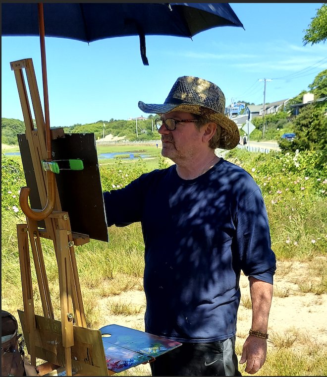

Biography

A contemporary, traditional impressionist painter, Lucas’ work focuses on the ever-changing light and its effects on color in nature. What matters most to him is being in the moment and expressing the gorgeous light and beauty of the four seasons.
Lucas is an artist and teacher from the Cape School of Art in Provincetown, MA. The school, inspired by the French Impressionists and known for its colorful plein-air painting method, was established over one hundred years ago. Dennis immediately adapted to this style of painting while living, working and practicing his craft on Cape Cod.
Dennis paints and exhibits throughout New England and has conducted many workshops in the great outdoors. Whether on the streets of Provence and Rome, around historic Boston, the Provincelands or the green mountains of Vermont, he uses his palette to create luminous impressionist paintings.
A past Artist-in-Residence at the historic Whistler House Museum of Art in Lowell, MA, Lucas’ work is in many public and private collections.
“Dennis Lucas follows in the path of the great impressionists like Renoir and Monet.”Lowell Sun
“His talent and training have given him a masterful style.”VYU Magazine